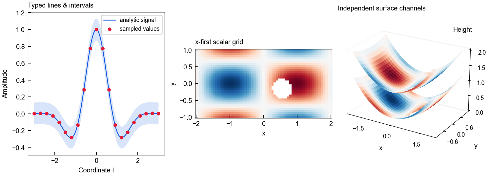
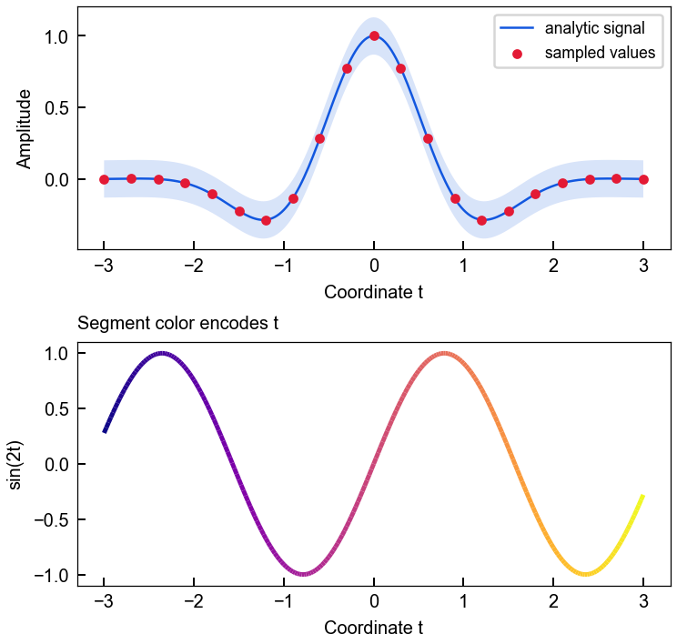
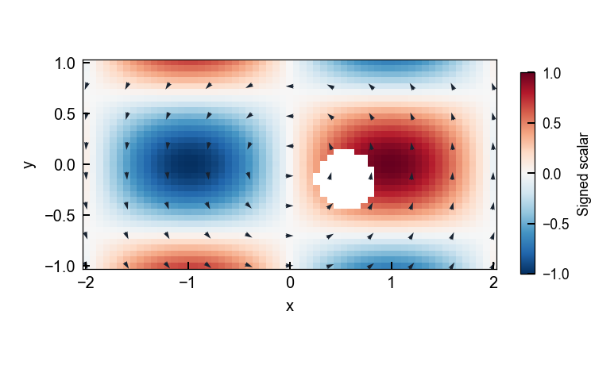
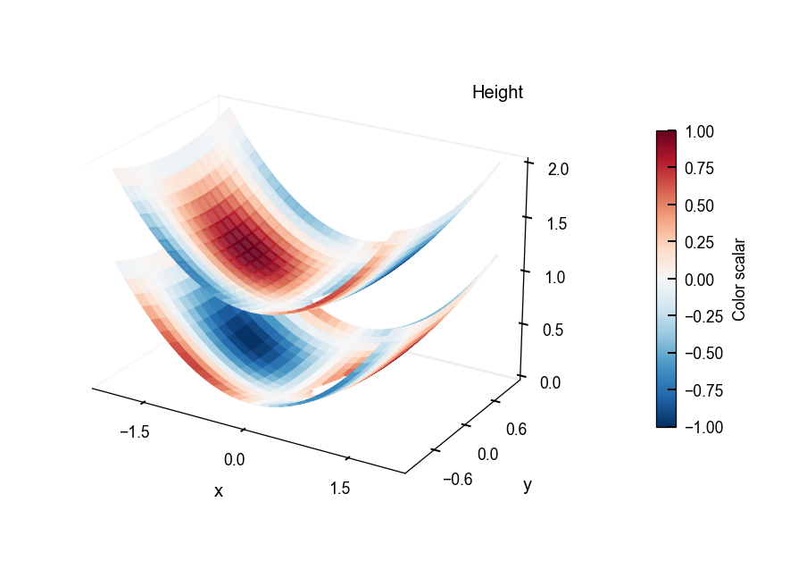
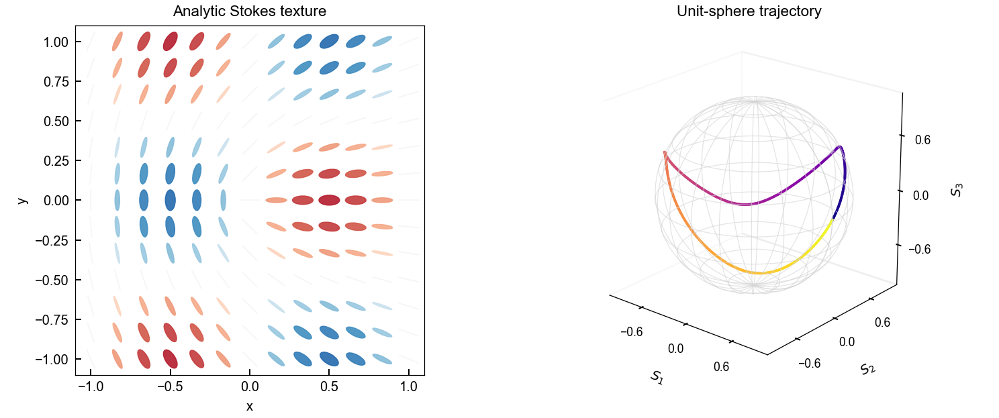

Computed synthetic examples · software demonstration · no experimental or full-wave evidence.
All quantities are dimensionless analytic test functions. Grids are x-first with shape (61,35), displayed at the actual 4:2 coordinate aspect. Red/blue represent positive/negative scalar values over [-1,1]; white holes are NaN, not zero. Surface height and color represent different arrays. Stokes components lie on the unit sphere; ellipse color is S3, with no physical propagation convention implied.
Provenance and checks · Runnable source · README

Actual public renderers draw analytic arrays onto caller-owned axes. Each view retains its own data meaning.
PNG · SVG
The shaded interval is ±0.13 around the analytic signal, used to demonstrate ribbon rendering; it is not measured uncertainty.
PNG · SVG
A 61 × 35 x-first scalar grid with a circular missing region and a sampled rotational vector field. Colorbar has its own axes, preserving the data rectangle.
PNG · SVG
Height is 0.25(x²+0.6y²), with the upper layer shifted by 0.85. Colors encode ±sin(1.6x)cos(2.3y); missing cells remain holes.
PNG · SVG
The left texture is colored by S3; the right path is colored by progression from t=0 to 2π. All three Stokes components are normalized.
PNG · SVG